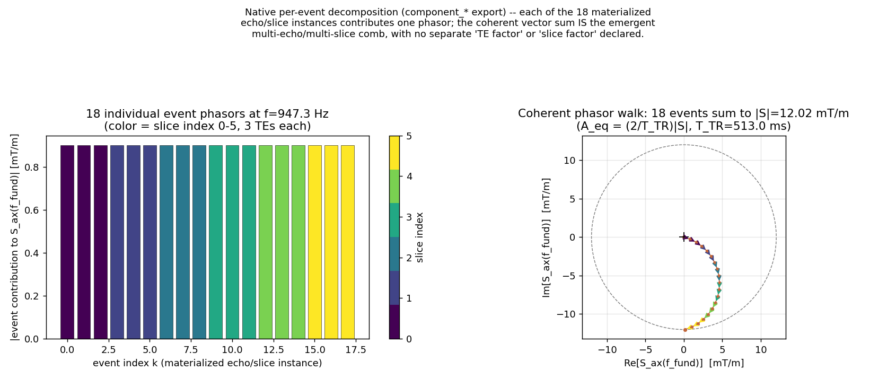
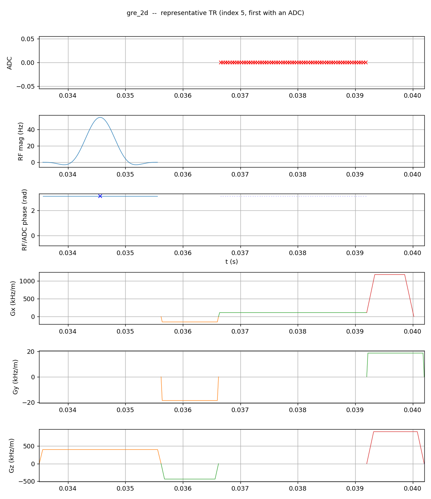
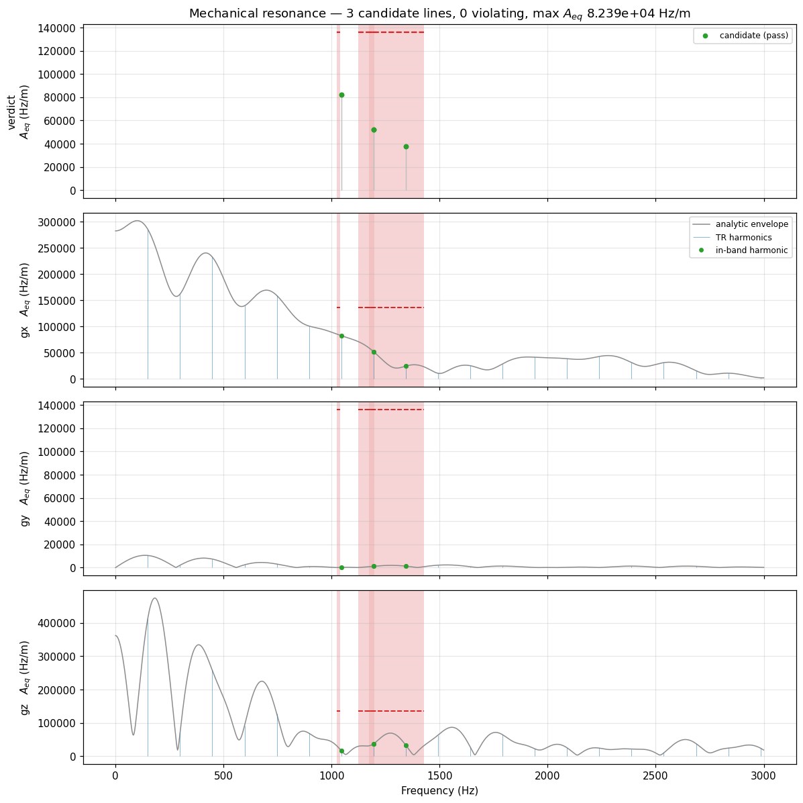
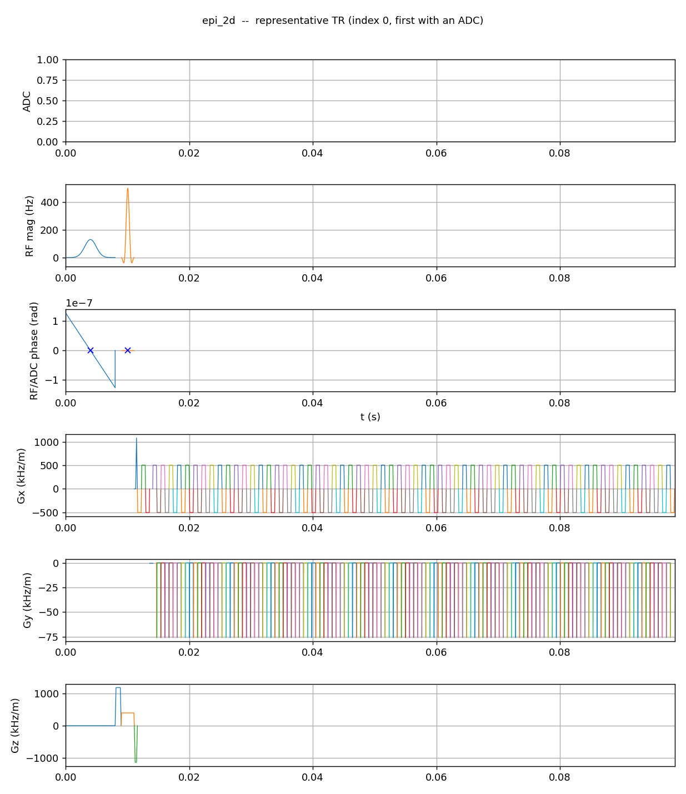
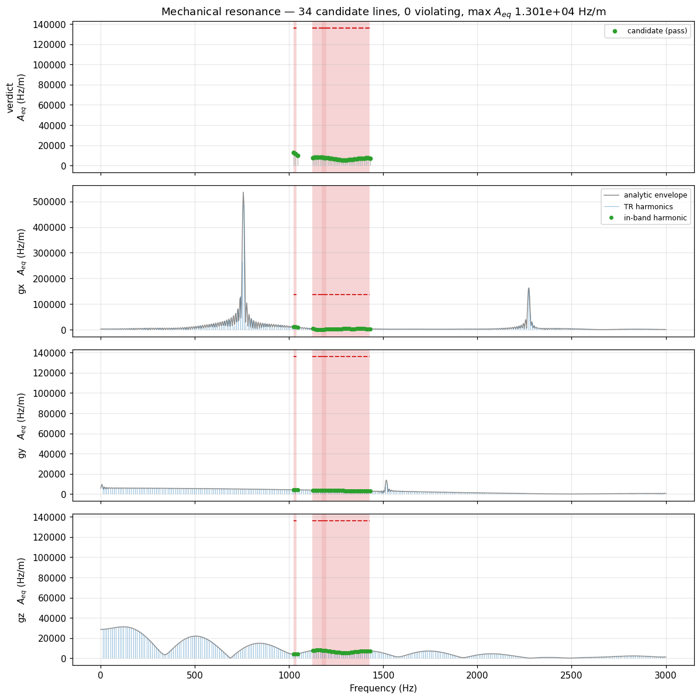
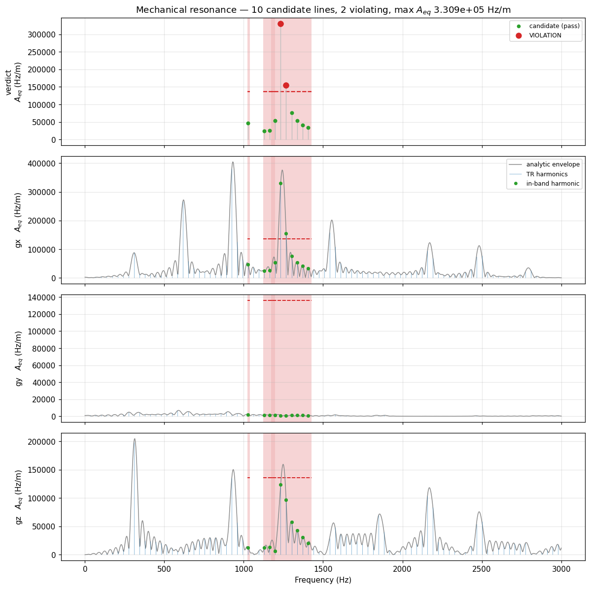

Mechanical resonance#
The physical problem#
A gradient coil sits in a strong static field. Driving current through it produces a Lorentz force, so every gradient waveform is also a mechanical drive on a large, stiff, lightly damped structure — the coil former, the cryostat, the bore. That structure has resonances, and a drive that lands on one is amplified by the structure’s Q factor rather than merely transmitted. The consequences run from unpleasant acoustic noise, through image artefacts from bore vibration, to fatigue damage of the gradient assembly.
Vendors therefore publish forbidden bands: frequency ranges in which the oscillating gradient amplitude must stay below a stated limit. The question a sequence has to answer before it is allowed to run is narrow and specific:
At the frequencies inside a forbidden band, how much oscillating gradient amplitude does this sequence actually deliver?
Note what the question is not. It is not “how much acoustic energy is produced”, and it is not a broadband noise figure. The forbidden band is a statement about a resonance, and a resonance responds to coherent drive at its own frequency. So the quantity that matters is the amplitude of the sinusoid the sequence effectively presents at that frequency.
The naive algorithm#
Render the whole sequence to a gradient waveform, one sample per raster tick, per axis. Take an FFT. Look at the bins inside each forbidden band. Compare against the limit.
This is correct, and it is what any offline check would do. It has three problems on a scanner.
Cost. A scan runs for minutes at a 4 µs raster: tens of millions of samples per axis. The check runs at predownload, while the operator waits.
Windowing. A single FFT of a minutes-long record has microhertz resolution and no meaningful notion of “the amplitude at 1150 Hz” — the answer depends entirely on the window you choose, and a spectrogram’s answer depends on the window width you happened to pick. There is no principled window width, because the sequence’s own structure supplies the timescale, not the analyst.
Truncation. The record you transform is the scan you happened to prescribe. Half as many repetitions gives a different spectrum for the same physical drive, which makes the verdict depend on scan length rather than on what the gradient coil experiences per unit time.
What Pulserver computes instead#
The analysis never renders a waveform. It exploits two exact properties of the Fourier transform, and the fact that a Pulseq sequence is already written in the form those properties want.
Linearity. The transform of a sum is the sum of the transforms. A sequence is a sum of time-shifted, amplitude-scaled copies of a small library of block shapes.
The shift theorem. Delaying a waveform by \(t_k\) multiplies its transform by \(e^{-j2\pi f t_k}\) and changes nothing else.
Together: transform each unique block shape once, then get every occurrence of it for free. Occurrence \(k\), with signed amplitude \(A_k\), starting at \(t_k\), contributes
and the per-axis spectrum is the coherent complex sum \(S_\text{ax}(f) = \sum_k a_k(f)\). This is not an approximation traded for speed — it is algebraically the same number the concatenated-waveform transform would give, reached by not redoing work the mathematics says is redundant.
The verdict statistic is
the amplitude of the pure sinusoid that would deliver the same coherent drive at \(f\) — a real gradient amplitude in the same units as the vendor’s limit, not a normalised score.
Stage 1 — the canonical structural window#
Everything is computed over one canonical window, the unit that repeats (the same window the TR-detection overlay supplies).
Degenerate prep/cooldown (absent, or structurally identical to the repeating body): the window is one imaging TR.
Non-degenerate prep/cooldown (a magnetisation preparation, a spoiler tail — a region structurally unlike the body): the window is the whole pass, prep + all NEX repeats of the body + cooldown.
Each gradient event in the window is recorded with its definition id, its start time within the window, and its per-position worst-case signed amplitude across every physical TR instance of that block position. A phase-encode blip that takes \(\{-5, 1, 0, 1\}\) across instances is stored as \(-5\): the largest magnitude, with its sign kept, so opposite-polarity instances of one definition still contribute the correct phase. The window is therefore virtual — no single TR of the real scan looks like it — and deliberately worst-case.
Stage 2 — per-definition waveform response#
Each gradient definition’s normalised complex response \(W_k(f)\), with \(W_k(0)=1\), comes from its true shape:
Trapezoid, extended trapezoid, ramp: the exact analytic transform of the piecewise-linear vertex sequence.
Arbitrary waveforms: the exact transform of the raw sample sequence, cell-centred at \(t_m = t_\text{start} + (m+\tfrac12)\Delta t\), evaluated directly at each query frequency.
No peak-anchoring, no magnitude-only model, no resampling.
Stage 3 — coherent sum, with repeats folded#
Where a definition repeats identically at even spacing, the shift-theorem phase factors form a geometric series with a closed form — the Dirichlet kernel:
so
Only NEX is folded this way. No inner periodicity is ever declared. An echo train’s spacing, a multi-slice repeat, a segmented readout — each instance is simply one more materialised event inside the window, and the comb structure emerges from the coherent sum, because a sum of \(N\) identical equally-spaced phasors is algebraically the Dirichlet kernel whether you write the closed form or accumulate it term by term. The engine can therefore export the individual per-event phasors that make up a line, which a closed-form product model cannot.
Stage 4 — the evaluation grid#
The canonical window itself repeats \(M\) times (num_instances — further
imaging TRs, or further passes). That repetition is folded analytically, by
its actual finite count, using the Dirichlet ratio
which is exactly 1 at integer \(x\). Folding by the true \(M\) rather than assuming an infinite comb is what makes the verdict invariant to how the sequence was authored: \(N\) identical blocks materialised inside one window, versus one block repeated \(N\) times as the outer count, are the same physical drive and now get the same answer.
Frequencies are therefore checked at:
every exact TR harmonic \(f = k/T_\text{TR}\) inside a guarded band, and
a small fixed number of fractional frequencies between consecutive harmonics, geometrically spaced near each adjacent harmonic, where the Dirichlet sidelobes live for large \(M\) (the largest sidelobe sits within \(\sim 1/(2M)\) of its lobe, so uniform spacing across the interval misses them once \(M\) grows).
\(S_\text{ax}(f)\) is evaluated fresh at each fractional frequency. Scaling a harmonic’s value by \(\text{ratio}(f) \le 1\) would be a no-op: a scaled-down value can never expose a candidate the harmonic did not already show.
Candidate selection and the violation rule#
The two-stage structure matters, and it is worth being explicit about why there are two stages rather than one.
Stage A — which frequencies are worth checking at all. A forbidden band arrives as \((f_\text{lo}, f_\text{hi}, \text{limit})\), but the true width of the underlying mechanical resonance is not known — only that the vendor drew the band about as narrow as their sharpest resonance. So every band is widened symmetrically by a guard:
half the width of the narrowest active band, used as the shared selectivity estimate for all of them. Wider bands are keep-out ranges and are scanned at the same guard. Every evaluation frequency landing in \([f_\text{lo}- \text{guard},\ f_\text{hi}+\text{guard}]\) becomes a candidate. This stage is deliberately generous: it costs one spectral evaluation to be wrong, and missing a line here is unrecoverable.
Stage B — whether a candidate is actually a violation. For each candidate, on each axis independently:
The floor at \(0.08\,G_\text{max}\) scales with the hardware and absorbs incidental spectral leakage — a phase-encode blip’s tail landing near a band edge — independently of how tight a particular band limit happens to be. A vendor band with a limit of exactly zero would otherwise reject every sequence that puts any energy anywhere near it.
Crucially the same statistic does both jobs. The amplitude compared against the limit is exactly the amplitude used to decide the frequency was worth considering. A design where selection and verdict use different quantities can disagree with itself by construction.
Why this is rotation-invariant for free#
Forbidden bands carry no axis tag, and the violation loop runs every axis against every band. A per-block rotation or an oblique FOV prescription only redistributes a fixed vector of gradient strength among Gx, Gy and Gz; it preserves the magnitude at every frequency. So no sequence can hide a dangerous frequency by rotating it onto an axis the check is not watching — all three are watched, and whichever channel ends up carrying the energy is the one whose \(A_\text{eq}\) is compared.
What this looks like on real sequences#
The table below is the shipped example zoo, analysed by the same compiled engine predownload runs, against a real vendor ESP lockout table. Each is a one-slice, one-average protocol; the analysis cost depends on the complexity of one canonical window, not on how many TRs follow it, so these numbers do not change when the protocol grows to clinical size. Timing is reported in full in Benchmarks.
Sequence |
\(T_\text{TR}\) |
Window |
Candidates |
Peak \(A_\text{eq}\) |
Gate |
Verdict |
|---|---|---|---|---|---|---|
GRE |
250 ms |
8 blocks, degenerate prep |
183 |
0.29 mT/m |
25 ms |
PASS |
FSE, ETL 16 |
3000 ms |
69 blocks, degenerate prep |
2208 |
0.74 mT/m |
785 ms |
PASS |
bSSFP |
129 ms |
129 blocks, non-degenerate prep |
95 |
17.5 mT/m |
41 ms |
PASS |
MPRAGE |
2163 ms |
59 blocks, degenerate prep |
1594 |
0.16 mT/m |
360 ms |
PASS |
Spiral, 48 short shots |
960 ms |
289 blocks |
708 |
2.5 mT/m |
377 ms |
PASS |
Spiral, 4 long shots |
80 ms |
25 blocks |
57 |
10.2 mT/m |
83 ms |
FAIL |
Reproduce with python docs/_bench/bench_safety.py --esp <table>.
Two things in that table carry the argument.
The spiral pair is the whole point of the criterion. Both rows are the same plugin, the same matrix, the same trajectory family — only the shot count differs, and with it the readout length. The 48-shot version spreads its gradient oscillation across many short readouts and passes comfortably. The 4-shot version concentrates it into long readouts whose fundamental lands inside a forbidden band, and fails on Gx at 1150 Hz with 132 kHz/m against a limit of 123 kHz/m. Nothing about the peak gradient amplitude distinguishes them; nothing about total acoustic energy does either. What distinguishes them is coherent drive at one frequency, which is exactly what \(A_\text{eq}\) measures.
bSSFP has the largest \(A_\text{eq}\) in the table and still passes. A sustained balanced readout drives its TR fundamental hard — 17.5 mT/m of equivalent sinusoid — but that fundamental does not land in a band on this system. Amplitude alone is not the verdict; amplitude at a forbidden frequency is. This is also the sequence family most sensitive to the band table: shift the TR and the fundamental walks across the frequency axis.
The mechanics that make this cheap — per-definition memoisation, analytic evaluation, \(O(1)\) NEX folding — and its measured scaling against PNS are covered in Benchmarks, so a method and its measurement can be read independently.
Relation to Seginer et al. 2508.03220#
Seginer et al. model a multi-echo, multi-slice EPI gradient train as an explicit convolution of a single echo train with Dirac combs at the echo, slice and TR periods, and derive its transform as the single-train envelope multiplied by one closed-form sine-ratio factor per nested periodicity:
Stage 3’s coherent sum is the same physics with the nesting left implicit: every echo and every slice instance is one materialised event, and the combs emerge from the sum. The outermost repetition (Stage 4) is the single exception, folded analytically by its finite count.
The figures below reproduce the paper’s Fig. 1 — a multi-echo multi-slice EPI train, echo spacing 0.52 ms, ETL 54, 3 TEs, 6 slices — through the real C engine, with the TE and slice spacing on and off the \(2\cdot\text{ESP}\) raster:

As in the paper, on-raster spacing keeps the energy in one dominant peak no matter how many echoes or slices are added (the three right-hand panels have identical peak height), while a sub-millisecond off-raster shift spreads it into a comb of comparable peaks. Because every instance is a real event, the engine can also export the phasors that sum to a line:

At the comb peak all 18 materialised events (3 TEs × 6 slices) add almost perfectly in phase. There is no “TE factor” or “slice factor” anywhere in the C code — only 18 event phasors and a running complex sum.
This phasor breakdown is the one product affected by
compress_trains. Occurrence-train compression is exact, so every
\(A_\text{eq}\) value, every candidate frequency and every verdict above is
bit-for-bit the same question either way. But the component_* arrays
export one term per event, and with compression on those 18 equally-spaced
occurrences are a single train event evaluated by one closed-form geometric
sum — so the export lists 1 term instead of 18. Pass compress_trains=False
when you want the individual phasors; nothing else changes.
Reading the plots#
docs/_bench/mechres_plots.py drives the same compiled engine across the
five-sequence reference corpus (gre_2d, epi_2d, fse_2d, mprage_2d
PASS; bssfp_2d the one genuine FAIL):
<venv>/bin/python docs/_bench/mechres_plots.py --esp <vendor_esp_table>.dat
It goes through pulserver.pypulseq.Sequence.mech_resonances(), which
calls pulseg_calc_mech_resonances with compress_trains=True — the same
occurrence-train compression pulseg_check_safety uses. The candidate lines
and pass/fail markers below are therefore the ones the scanner decides on,
not a parallel Python calculation.
Compression is exact, so compress_trains=False produces the same lines and
the same verdicts (identical candidate frequencies, \(A_\text{eq}\) agreeing
to float precision). It exists as a cross-check, and because it is the only
mode in which a component_* term maps to a single materialised occurrence
rather than to a whole train.
Note grad_spectrum() is a different
thing: pypulseq’s own spectrogram with the bands shaded on top, useful for
eyeballing the waveform but not the verdict. Only mech_resonances returns
\(A_\text{eq}\).
For context,
docs/_bench/waveform_plots.py draws the same corpus’s representative TR —
the same window this analysis runs on, scoped past each fixture’s leading
dummy (non-ADC) TRs — so the frequency-domain verdict below can be read
directly against the waveform that produced it;
the PNS page shows the same pairing for GRE and
EPI.
GRE, one isolated readout gradient per TR — the baseline case, comfortably inside every band:


EPI, a long blipped echo train. Unlike PNS (where EPI is the extreme case), mechanical resonance only asks about the readout’s own switching frequency — one Gx harmonic near 750 Hz standing well clear of the forbidden bands, plus the blip train’s own fundamental on Gz:


bSSFP, whose sustained balanced readout drives the TR fundamental hardest:

MPRAGE, annotated with its window parameters read from the C structure descriptor:

Each figure has four rows. The top row is the verdict: it plots
candidate_grad_amps, the quantity actually compared against
\(\varepsilon\), with green dots passing and red dots violating. That value is
the maximum over the three axes and over the finite-outer-repeat sidelobe
probes around each harmonic, so it can exceed every per-axis value shown
below it — which is why the pass/fail marking lives on its own row rather
than being attributed to one axis.
The three rows underneath are per-axis context. Blue stems are \(A_\text{eq}\) at exact TR harmonics — stems rather than a line, because there is genuinely no content between them. The grey curve underneath is the matched analytic envelope: the same closed-form \(S_\text{ax}(f)\), evaluated on a dense uniform grid. Because the stems are that function sampled at the harmonics, the envelope passes exactly through every stem tip with no rescaling — unlike an independent FFT of the materialised waveform, which uses a different window and normalisation and would only be shape-similar. Green dots are that axis’s coarse \(A_\text{eq}\) at the guarded-band harmonics. Shaded regions are forbidden bands and the dashed line is \(\varepsilon\) for that band: the vendor limit, or the \(0.08\,G_\text{max}\) floor when the table specifies zero tolerance.
Candidates are enumerated per band, so a harmonic falling inside two overlapping bands is listed once per band. A vendor ESP table that repeats the same rows for X and Y — the common case — therefore yields duplicate candidate entries with identical values. The verdict is unaffected (the duplicates agree), but the captions count distinct lines.